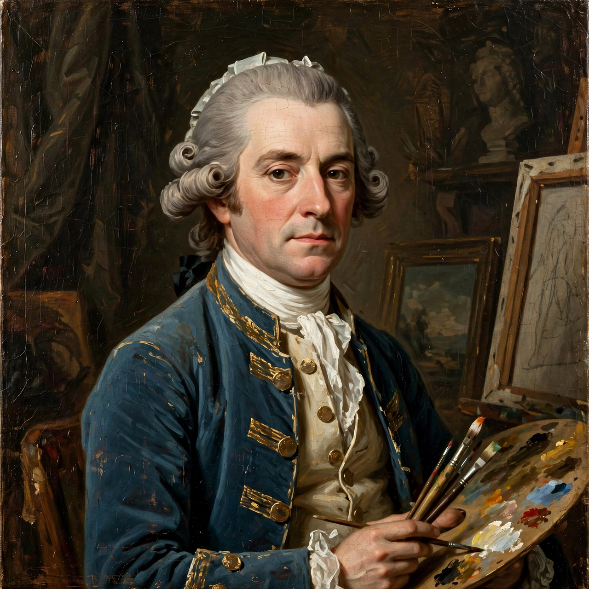

Thomas Gainsborough
| Thomas Gainsborough | |
 | |
| Born | 14 May 1727, Sudbury, Suffolk, England |
|---|---|
| Died | 2 August 1788 (aged 61), London, England |
| Nationality | English |
| Known for | Painting |
| Movement | Rococo |
Thomas Gainsborough (14 May 1727 – 2 August 1788) was an English portrait and landscape painter, draughtsman, and printmaker. Along with his rival Sir Joshua Reynolds, he is considered one of the most important British artists of the second half of the 18th century. He painted quickly, and the works of his maturity are characterised by a light palette and easy strokes.
Early life
Gainsborough was born in Sudbury, Suffolk, the youngest son of a cloth merchant. His talent was recognised early, and at 13 he was sent to London to study art, working with engraver Hubert Gravelot and associating with William Hogarth's circle. In 1746 he married Margaret Burr, whose annuity of £200 a year gave him financial independence.
Career
After years painting portraits and landscapes in Suffolk and Ipswich, Gainsborough moved in 1759 to Bath, where his portraits of fashionable society made him prosperous. In 1768 he was a founding member of the Royal Academy. He moved to London in 1774 and became a favourite of King George III, though he quarrelled with the Academy over the hanging of his pictures.
His famous works include Mr and Mrs Andrews (c. 1750), The Blue Boy (c. 1770), The Market Cart, and numerous portraits in which sitters are set within feathery, naturalistic landscapes. Gainsborough himself said he preferred landscape painting, remarking that he painted portraits for money and landscapes for pleasure. His loose, fluid handling influenced later British landscape painting, notably John Constable, who admired him greatly.
Death and legacy
Gainsborough died of cancer on 2 August 1788 and is buried at St Anne's Church, Kew. His house in Sudbury is now the Gainsborough's House museum. His works are held by major collections including the National Gallery, London, and the Huntington Library in California, which owns The Blue Boy.